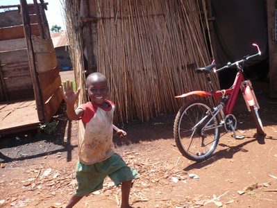

EEN 12-DAAGS AVONTUUR
In 2015 organiseert vzw Munnange in
samenwerking met Matoke Tours opnieuw een inleefreis naar Oeganda, ‘de parel van
Afrika’. Tijdens deze reis nemen we jullie mee naar de ongekende natuurpracht
van Oeganda en leren we het land van binnenuit kennen. Er is veel contact met de
plaatselijke bevolking, we bezoeken organisaties, verblijven bij de mensen
thuis, bezoeken verschillende samenwerkingspartners ter plaatse, maken kennis
met de cultuur, gebruiken en rituelen en dit alles in een sfeer van respect en
openheid; de pijlers van onze vzw. Er is veel ruimte voorzien om verhalen te
beluisteren, ervaringen te delen en van gedachten te wisselen. De reis wordt
begeleid door leden van de Raad van Bestuur van vzw Munnange en ervaren
Oegandese chauffeurs (ondermeer voor Matoke Tours).
Een combinatie van safari en kennismaking met de lokale bevolking en
verschillende plaatselijke projecten geven je een divers en compleet beeld van
een nog onontdekte parel in Afrika.



DE INLEEFREIS: ± €1400
Deze prijs is gebaseerd op 7 deelnemers. Wanneer het aantal deelnemers stijgt,
daalt de prijs per persoon. Inbegrepen:
- Transport met een 4x4 minibus met open dak voor een perfect safari zicht.
- Alle brandstof voor de toer.
- Engels sprekende Oegandese gids/chauffeur.
- Nederlandse begeleider van Munnange
- Accommodatie
- Maaltijden zoals vermeld in het programma
- Activiteiten zoals vermeld in het programma
- Entreegelden van de parken
HET VLIEGTUIGTICKET: ± € 700
De vliegtickets zijn niet inclusief in de prijs van deze reis. Wel kunt u
het vliegticket via Matoke Tours boeken. De kosten van uw vliegticket worden
dan vermeld op de factuur van de reis.
EXTRA’S: ± € 200
- Visa Oeganda
- Vaccinaties
- Drankjes
- Fooien voor rangers, gids/chauffeur, hotelpersoneel
- Persoonlijke uitgaven zoals souvenirs, snacks, enz.
Een visum voor Oeganda kan gekocht worden bij aankomst op de luchthaven van
Entebbe en kost USD 50 per persoon.
Als je geïnteresseerd bent, stuur ons dan een
mailtje.
Je krijgt dan een uitgebreid reisprogramma en de betalingsvoorwaarden
toegestuurd. Pas na betaling van het voorschot is je deelname definitief. De
reis wordt enkel georganiseerd als er minimum 7 deelnemers zijn tot een
maximum van 15 deelnemers. Hoe meer deelnemers, hoe lager de kostprijs.
Impressies vorige inleefreizen
Armin Debbaut, deelnemer inleefreis 2014
Twee weken Oeganda. Daar denk je toch eerst even goed
over na. Ik, die nooit verder dan de Belgische buurlanden
was gereisd. De reis was duidelijk omkaderd, ik kon mij
vrijmaken, het geld had ik ook dus uiteindelijk ging ik
overstag. Maanden later landde ik voor het eerst op
Oegandese grond. Hier werd de opbouw van de reis
duidelijk: langzaam werden we ondergedompeld in het
Oegandese leven.
Maar Oeganda zou niet in Afrika liggen, mocht er niets
onverwachts gebeuren. Dat zegt men althans, de
reisbegeleiders hielden ons weg van de nare twisten maar
lieten ons de aangename ervaren.
Mijn leukste herinnering is misschien wel het gevolg van
zo'n onverwachte twist. Er werd ons een alternatief
programma voorgesteld zodat we chimpansees konden
zien. 10 minuten later hadden we een unanieme beslissing.
Nog eens 10 minuten later waren verblijven en activiteiten
geregeld. Het zijn op zo'n momenten dat je de
meerwaarde van reisbegeleiders beseft. Die volgende 2
dagen heb ik misschien wel mijn mooiste tijd beleefd in
Oeganda. Niet omdat we hier plots in een paradijs
belandden maar wel vanwege de unanieme spontaniteit
die was gegroeid in onze groep. Vanwege het achtervolgen
van het gekrijs van de chimpansees om ze uiteindelijk ook
te zien.
De landschappen heb ik niet kunnen meenemen naar huis
maar de vriendschappen wel.
Riet, deelneemster inleefreis oktober 2013
Op 7 oktober staan we, in alle vroegte, met 9 klaar in Zaventem, elk met z’n
bagage en een valies vol spullen voor Oeganda. Elkeen heeft ook een heleboel
verwachtingen, spanningen… benieuwd naar wat ons te wachten staat!
Laat op de avond worden we in Entebbe verwelkomd door Maika en onze 2
chauffeurs, Sula en Kenneth. De volgende morgen begint het echte verhaal!
We komen ogen, oren en neuzen, woorden tekort om alles te observeren en op
te slaan. Elk van ons heeft zijn eigen manier van kijken, verwerken, beleven… we
zijn met z’n allen nieuwsgierig, kritisch, enthousiast,ontgoocheld, onder de
indruk! Tijdens de maaltijden en in ons busje is er tijd om te discussiëren over
waar we met verschillende ogen en achtergrond naar kijken maar ook tijd om te
grappen en te grollen en te ontladen.
Deze reis is een goede mix van toerisme en inleven: Oeganda is een mooi land
met afwisselende natuur: een zeer groen landbouwland.
We hebben kuddes olifanten en neushoorns
van ver en dichtbij gezien; giraffen,waterbokken, buffels, krokodillen,
nijlpaarden en impala’s poseerden voor onze lens. Vogels in alle kleuren.
Onvergetelijke landschappen rolden als een film voorbij. En we genoten!
Oeganda is ook een rijk waterland:het Victoriameer is de grootste plas; de Nijl
heeft er zijn bron en overal stroomt er water met indrukwekkende watervallen...
In sommige dorpen is er een gemeenschapspomp voor water voorzien. Bovendien
begon het regenseizoen en na zo'n plensbui weet je wat het betekent 'met bakken
uit de hemel vallen'!
Oeganda heeft een
uitgebreid wegennet en volgens de Oegandezen in redelijk goede staat. Maar eens
je er rijdt kan je meestal genieten van de African Massage: een zware test voor
je zitknobbels en een hele kunst om zonder blauwe plekken thuis te komen. Er is
ook georganiseerd openbaar vervoer: minibusjes doorkruisen het hele land.
Wettelijk maximum 14 personen: maar dat is een rekbaar begrip... dus zolang
iedereen wat krap wil zitten kan er nog altijd eentje bij ook al heeft die
kippen of zakken vol boodschappen naar huis te brengen.
Maar de snelste manier om zich te
verplaatsen zijn de boda-boda's: moto's met chauffeur die het hele land
doorkruisen met 1, 2, 3 passagiers achterop of tonnen water, stapels
brandhout,trossen bananen, zelfs kippen, geiten of varkens vastgebonden met
fietsband.Zij brengen ook je boodschappen naar huis.
Ook fietsen zijn handig: je rijdt
ermee tot die vol geladen is en dan stap je zo terug naar huis. En als dat
allemaal niet voorhanden is heb je nog altijd je hoofd om vol te laden tot
niemand nog ziet wie je bent!
Inleven is deel uitmaken van het dagelijkse leven: het leven in een dorp
met de lokale bevolking. Dat betekent dat je geen aardappelen kunt halen in de
winkel maar vandaag moet planten om binnen 2 maanden te oogsten. Dat betekent
brandhout verzamelen, water halen, fruit en groenten oogsten en je reppen om het
eten klaar te krijgen tegen de middag. In de stad moet je vroeg naar de markt
vertrekken en zorgen dat je voor een eerlijke prijs probeert te kopen wat je
nodig hebt. De boda-boda brengt het wel naar huis!Gelukkig maken vele handen
licht werk: onze maaltijd geraakt op tijd klaar en we kunnen ervan
genieten.
Overal werden we goed
ontvangen: iedereen blij met het bezoek van de muzungu (blanken) en trots op hun
realisaties…. We ontmoetten fiere mensen met veel dynamisme en een visie om u
tegen te zeggen!... maar ook mensen die het negatieve beeld dat we hebben over
de afrikaan alle eer aandoen:zij horen zichzelf graag praten ook al heeft wat ze
zeggen geen inhoud en ze blijven ervan overtuigd dat alleen hulp van buiten af
hen verder kan brengen…en zij wachten…
Terug thuis met een schat aan beelden,
indrukken, visies en warme herinneringen proberen we met onze verhalen te
brengen wat we mochten beleven.
Soms rijst de vraag: is dit wel zinvol?
JA: zolang wij kunnen
moeten we investeren in een landwaar de middelen beheerd worden door mensen die
status en macht als hun hoogste goed beschouwen en vergeten dat er initiatief en
potentieel voldoende is om een leefbare wereld uit te bouwen.
Dank aan hen die ons hierin voorgaan!
Dank ook aan alle medereizigers die elk met hun eigen zijn en inbreng een
grote meerwaarde betekenen voor wat we leerden kennen.
Het rode stof is al uit de
kleren,maar de stof tot nadenken nog niet helemaal geordend in mijn hoofd!
Afrika laat me nooit meer los!
Weebale (gegroet en dank voor het werk dat je voor ons doet)!
Hugo Verhaege, deelnemer inleefreis oktober 2013
Droomreis
Midden in mijn dorp,
of amper een steenworp
daarvandaan,
verder ging ik niet.
Beschreef ik in mijn dromen
varend op een driemaster in mijn brein
de zoete geuren van donker Afrika,
het rode zand van de woestijn,
de zilte wind die oceanen streelt
of tot storm opzweept.
Sneeuwblind worden op de pool,
zonder einde op de dool.
Tot ik thuis kom
op amper een steenworp
van mijn dorp
en schrijf het heimwee
van mij af
terwijl ik afmonster op het schip
dat eindeloos mijn brein bevoer
met rusteloze geesten aan het roer.
Omdat ik in weerwil
van mijn dromen,
niet verder kon, of wilde komen,
dan een steenworp van mijn dorp.
Tot de drang mij te sterk geworden
en in weerwil van mijn vrees
het zeegat koos.
de horizon voorbij.
En heb beseft dat éénmalig toch
een mens op zoek moet naar de wieg van zijn bestaan.
Voordat alles bezoedeld wordt
puur en naakt herboren
in het zwarte Afrika
en ik weer lachen leer, naïef en zonder zorg.
al was het maar voor even.
Jan Luyssaert, deelnemer inleefreis oktober 2013
Tussen werkelijkheid en droom (en vice versa)
Deze reis verschilde van vorige alleen al door de verscheidenheid van
deelnemers: een jonge maatschappelijk assistente en gepensioneerden uit de
medische-en welzijnssector, het onderwijs, het bedrijfsleven en de handel. Ieder
met zijn eigen achtergrond en zijn eigen kijk op de werkelijkheid.
Het
is ook verleidelijk om hier uit te weiden over de indrukwekkende natuur, het
fokprogramma voor neushorens, de kudden olifanten die Riet telkens opnieuw in
vervoering brachten, de bootsafari naar de Murchison Falls, de zoektocht naar de
bronnen van de Nijl (niet te geloven, maar de Nijl ontspringt als een bruisende
bron!).In de honderden foto’s kunnen deze natuurfenomeen opgeroepen worden. Wat
we niet kunnen fotograferen, zijn de indrukken die we hebben opgedaan bij onze
wandeling door de dorpen, een meeleef voormiddag bij een Oegandese familie, de
kennismaking met het Kisubi-ziekenhuis, de Kisoboka-straatkinderen,
Taso-Aidskliniek, de vissersschool, de Early Learning School, de markt, de
kookles en de bewogen recente geschiedenis van Oeganda.
Het zou me te
ver leiden als ik de indrukken die ik bij ieder bezoek heb opgedaan hier zou
neerpennen, daarom maak ik een willekeurige selectie.
Ik wil alvast
beginnen met het Munnange Counselling Centre, gehuisvest op de campus van Nkumba
University in Entebbe. Sedert oktober 2012 is de Oegandese counsellor Lucy er in
dienst. We konden ervaren dat Lucy in het voorbije jaar het centrum inhoudelijk
op de kaart heeft gezet op de universiteitscampus, in de omliggende communities
en in het bijzonder in de Early Learning School en in het Kisubi-ziekenhuis
(maar hierover heb ik het verder). Het kantoortje van Munnange kreeg nieuw
meubilair die het bezoek van de cliënten comfortabeler en aangenamer moeten
maken. De groeiende vraag naar psychische hulp vraagt om meer personeel.
Kisoboka-project in Jinja.
Kisoboka betekent in de plaatselijke taal ‘het is mogelijk’. In dit project
worden straatjongeren opgevangen en leren ze hun eigen leven in handen nemen.
Vele van die jongeren snuiven lijm, liggen langs een verlaten spoorlijn de nacht
af te wachten en leven van wat ze vinden op straat. Onze gids, zelf een vroegere
straatjongen, leidt ons door de bedrijvige onderbuik van de stad. In wat wij
gemakshalve een atelier noemen, bedienen er tientallen mannen, dicht opeengepakt
onder groezelige,roestige daken, de smidsehamer. Wat bij ons schroot is, toveren
zij om tot allerlei gebruiksvoorwerpen. Uit oude olievaten worden potten,
schalen, emmers en zelfs metalen kisten gemaakt; lege conservenblikjes worden
tot olielampjes omgetoverd; uit velgen ontstaan een soort van houtskoolvuurtjes.
En zelfs verroeste in mekaar verfrommelde Bekaert-draad wordt recht getrokken en
krijgt een nieuwe bestemming. In de lange garagestraat worden uitgeleefde
vrachtwagens en bestelwagens opgelapt en tot een zoveelste nieuw leven gewekt.
De technische vaardigheid van deze mannen grenst aan het ongelooflijke en staat
in fel contrast tot de gebrekkige dagdagelijkse organisatiemogelijkheden en
-moeilijkheden die we tijdens ons verblijf in Oeganda zo vaak hebben ontmoet.
Goed georganiseerd zijn wel het leger en politie. Politiepatrouilles staan er om
de kilometer langs de grote wegen en tegen het einde van de week wordt het
aantal controles opgedreven want ze brengen een mooie weekendfooi op.
Maar nu terug naar onze ‘citytour’ door Jinja. Langs een verlaten, met
viezigheid en stinkend afval bedekte spoorlijn, daterend uit de Engelse tijd,
brengt de gids ons naar de markt.
Op de markt worden vooral samengeperste balen kleren te koop
aangeboden, waarschijnlijk afkomstig uit de verzamelbakken die her en der het
straatbeeld in ons land ontsieren. Uit autobanden worden sandalen gesneden en
een snuggere kerel drijft er met het onderstel van een fiets zijn slijpsteen
aan. Ze laten zich maar al te graag fotograferen. Wie echter de camera schuwt is
de medicijnman:in zijn donker kraam verkoopt hij allerlei vreemde en magische
voorwerpen,verwrongen boomwortels, slangenhuiden, schedeltjes, touwen met knopen
erin die genezing van allerlei duistere kwalen beloven. Betoverend kan je deze
markt niet noemen…
Een wandeling door het dorp in de nabijheid van onze lodge “The Haven” is een
ware verademing en leert ons meer over de verkwikkende kant van het dagelijks
leven dan de weinig opbeurende slentergang door de markt van Jinja. Onder
leiding van Charles, zelf een inwoner van het dorp en kelner in onze lodge,
kuieren we over rode aardewegen tussen lemen hutten en stenen huisjes. Zwermen
kinderen lopen achter ons aan en klampen zich vast aan onze blanke handen.
Meisjes en jongens van nauwelijks tien jaar dragen een broertje of zusje van
enkele maanden oud op de rug. Hun moeders zijn voor de hut gezapig in de weer:
groenten schoonmaken voor het middagmaal, koffiebonen open spreiden om te drogen
in de zon of gebogen overeen plastic emmer een wasje slaan. Overal wuivende
handen: “How are you”, de eerste Engelse woordjes die kinderen op school leren.
Ze verdringen mekaar om te poseren voor de foto. En de mannen spelen de godganse
dag een gezelschapsspel en nippen aan een zelf gestookt drankje. Jonge boontjes
groeien weelderig tussen de bananenbomen, magere kippen met een paar kuikentjes
scharrelen in de stofferige aarde en een jong geitje geniet van zijn aangebonden
vrijheid. Het lijkt alles zo vreedzaam, bijna idyllisch. Bea, Rieten Hugo
bewonderen de weelderige planten en bloemen … Hugo kan het niet laten om stekjes
mee te nemen, misschien groeien ze wel in zijn serre thuis. Een dorpsomroeper
rijdt op zijn bromfiets tussen de verspreide hutten en in een megafoon meldt hij
het overlijden van een baby. Uit het huisje, waar het kindje is overleden, horen
we het (verplichte) geweeklaag van de buurvrouwen. Ook dat hoort bij het leven
van de dorpsgemeenschap.
Het Kisubi-ziekenhuis bij Entebbe ligt verspreid over verscheidene gebouwen
op een bebloemd en groen terrein. Alles ziet er piekfijn en verzorgd uit.
Duidelijke bordjes leiden de patiënten naar de dienst die ze zoeken. Je voelt en
ziet hierachter een visie, een management en een goed draaiende organisatie,
weliswaar met buitenlandse financiële hulp, maar die hulp vloeit hier niet in
een bodemloos vat. De bovengrondse watertank is een schenking van de Rotary-club
Maastricht-Lanaken; schenkingen lonen hier…. Fier leidt de PR-dame ons rond: er
wordt nog steeds gebouwd, er komt een nieuwe vleugel met patiëntenkamers.
Voorzien van aangepaste hygiënische kledij mogen we het operatiekwartier
bezoeken, je waant je in één van onze moderne ziekenhuizen. Buiten, onder een
afdak en beschermd tegen de zon, staan patiënten aan te schuiven bij de
apotheker. Alle diensten zijn hier permanent aanwezig, enkel de oogarts komt een
paar keer per week langs. Tot slot worden we ontvangen door de hoofdgeneesheer.
Hij is een overtuigd bezieler van het holisme: dit is een visie
waarin de mens
als een geheel van lichaam en geest wordt gezien. Een ziekte is meer dan een
lichamelijke kwaal, ook psychisch lijden is lijden.
De Early Learning School in Entebbe werd in 1993 gesticht door
Agnes
Biryahwaho die nog steeds de leiding van de school in handen heeft. In de school
en het internaat worden wezen en verlaten kinderen opgevangen. Schrijnende
verhalen horen we. Kinderen die door hun ouders werden mishandeld of ergens
langs de weg werden achtergelaten, vinden hier een warm nest. Munnange biedt er
psychologische steun aan die kinderen en pubers die erom vragen. In de schaduw
van een grote boom wacht de hele groep kinderen met leerkrachten en directie ons
op. Gezeten op banken of op de grond, ontvangen ze ons met liederen en
getuigenissen. Agnes verdeelt de door ons meegebrachte schoolbenodigdheden.Fier
leiden een paar kinderen ons (samen met Agnes) naar de klaslokalen en de
slaapzaal; de stapelbedjes staan er netjes op een rij en knuffeldiertjes kijken
ons aan. Aan het voeteinde van elk bed bewarende kinderen in een metalen koffer
hun persoonlijke spulletjes. Als we na ons bezoek de school verlaten, vraagt een
jongen of we de volgende keer een voetbal willen meebrengen. De volgende dag
worden een paar voetballen door Munnange aan de school geschonken. Die indrukken
van dit bezoek beklijven en beheersen nog steeds onze gesprekken.
Oeganda is een land met vele
verschillende snelheden. Dorpjes waar het leven voort suddert, ver weg van de
bewoonde wereld, geen elektriciteit, geen drinkbaar water in de nabijheid, geen
radio, geen TV, als enig contactmiddel is bij velen de GSM doorgedrongen. De
bewoners leiden er een leven, heel ver van het leven dat wij kennen. De
hoofdstad Kampala met zijn zes miljoen inwoners draait op een andere
snelheid.Het is één georganiseerde chaos. In de benedenstad hangt de smog
gemengd met de stank van gistende grachten. Mensen wriemelen en wringen zich
door het stikkende verkeer. Heel anders is het leven op de heuvels rond de stad.
Die zijn voorbehouden aan de rijken, zowel blanken als Oegandezen. En ook dat is
dan weer een verhaal tussen droom en werkelijkheid (en vice versa).